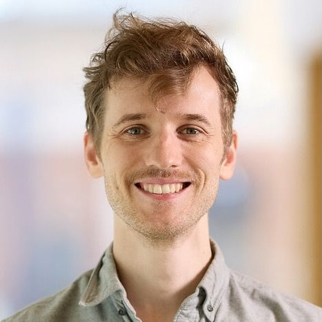

MIT CSAIL · Scene Representation Group
Faculty profile · 2026
Associate Professor, MIT EECS
Founder, Scene Representation Group
Building machines that learn to understand, simulate, and act in the physical world.
World modelsVision, graphics, generative modeling & robotics
Stanford · TUMPhD with Gordon Wetzstein · BSc
RecognitionNSF CAREER · TC-PAMI Young Researcher · MIT Junior Bose

SRG01